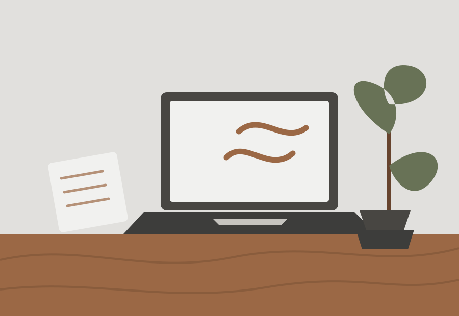

Understand
Start with the problem, the people using the solution, and the fundamentals that make it work.
03 / Learning lab
This is an honest snapshot of the areas I am actively developing through my Software Engineering education and independent learning.

How I learn
Start with the problem, the people using the solution, and the fundamentals that make it work.
Apply concepts through code, coursework, and practical exercises — learning by doing.
Review what worked, identify what to improve, and carry that lesson into the next challenge.
Current focus areas
Programming concepts, structured problem-solving, and writing clear, maintainable code.
Java · Python · C# · PHPUnderstanding how information is modelled, stored, connected, and used responsibly.
MySQL · Databases · NetworkingExploring how thoughtful front-end development can make technology easier to use.
HTML · CSS · JavaScript · UI/UX